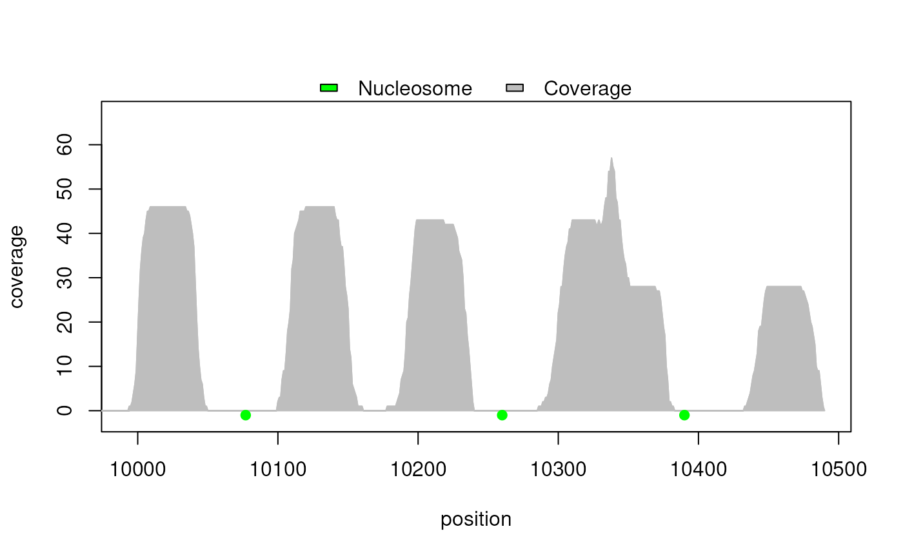

Generate a graph of nucleosome positions with read coverage
Source:R/rjmcmcMethod.R
plotNucleosomes.RdGenerate a graph for
a GRanges or a GRangesList of nucleosome positions. In
presence of only one prediction (with multiple nucleosome positions), a
GRanges is used. In presence of more than one predictions (as
example, before and after post-treatment or results from
different software), a GRangesList with
one entry per prediction is used. All predictions must have been obtained
using the same reads.
Usage
plotNucleosomes(
nucleosomePositions,
reads,
seqName = NULL,
xlab = "position",
ylab = "coverage",
names = NULL
)Arguments
- nucleosomePositions
a
GRangesor aGRangesListcontaining the nucleosome positions for one or multiple predictions obtained using the same reads. In presence of only one prediction (with multiple nucleosome positions), aGRangesis used. In presence of more than one predictions (as example, before and after post-treatment or results from different software), aGRangesListwith one entry per prediction is used.- reads
a
GRangescontaining forward and reverse reads. TheGRangesshould contain at least one read.- seqName
a
characterstring containing the label of the chromosome, present in theGRangesobject, that will be used. TheNULLvalue is accepted when only one seqname is present in theGRanges; the only seqname present will be used. Default:NULL.- xlab
a
characterstring containing the label of the x-axis.- ylab
a
characterstring containing the label of the y-axis.- names
a
vectorof acharacterstring containing the label of each prediction set. Thevectormust be the same length as thenucleosomePositionslistor 1 in presence of avector. WhenNULL, the name of the elements of thelistare used or the string "Nucleosome" for avectorare used. Default:NULL.
Examples
## Load reads dataset
data(reads_demo_01)
## Run RJMCMC method
result <- rjmcmc(reads = reads_demo_01,
seqName = "chr_SYNTHETIC",
nbrIterations = 4000, lambda = 2, kMax = 30,
minInterval = 146, maxInterval = 292, minReads = 5,
vSeed = 10213)
## Create graph using the synthetic map
plotNucleosomes(nucleosomePositions = result$mu, seqName = "chr_SYNTHETIC",
reads = reads_demo_01)
